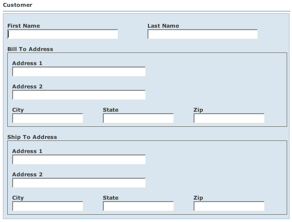

Wicket Web Beans (WWB) is an Apache Wicket (http://wicket.apache.org) component toolkit for displaying and editing POJOs that conform to the JavaBeans specification. Web pages are automatically generated based on bean properties and certain conventions. If necessary, the layout, editability, and actions of these pages can be customized on an exception basis. In other words, the toolkit normally does what you'd expect, but when it doesn't, you can override its behavior.
At the highest-level, the wicket.contrib.webbeans.containers.BeanForm component provides rich AJAX form functionality. The form is embedded in a Page designed by you. This allows you to create customized page designs. Also, this allows multiple BeanForms to be incorporated on a single page. At your choosing, other lower-level components may be used independently of BeanForm (e.g., BeanGridPanel). WWB does not try to force you into a certain way of doing things, but BeanForm makes it very convenient to implement a bean-based form if you don't want to go to a lot of extra work. You focus on the model (beans), WWB handles the user interface.
Fields within a form are dynamically sent back to the server-side bean as they are changed, which eliminates the typical submit cycle. This makes WWB act more like a rich client application and less like a standard forms-based application.
WWB currently requires:
Let's take a look at a simple bean from the examples:
001 package wicket.contrib.webbeans.examples.simple;
|
| Java2html |
This is a Java Bean compliant POJO. As most people know, getters start with "get" or "is" and setters start with "set". Java Beans also require a public no-argument constructor, which we have. All beans must be Serializable by Wicket convention.
This bean also implements PropertyChangeListeners and Events. This is an optional part of the Java Beans spec. However, if your bean implements add/removePropertyChangeListener(), BeanForm will automatically register itself as a listener to your bean. In this example, we're going to use PropertyChangeEvents to notify BeanForm when dependent properties change.
If you don't implement PropertyChangeListeners, BeanForm already knows if a single property changes from a change on the form. For example, setFirstName() automatically changes the input value to upper case. BeanForm knows to refresh this field on the form because the user changed it. If you type "xyzzy" in the First Name field and tab or click away from the field, the field is sent to the bean and the field is dynamically refreshed to it's new value "XYZZY".
Before we get too deep, let's take a look at the Wicket page (wicket.contrib.webbeans.examples.simple.SimpleBeanPage) and HTML:
<html xmlns:wicket> <head> <wicket:head> <wicket:link><link href="bean.css" type="text/css" rel="stylesheet" ></link></wicket:link> <title>Simple Bean Page</title> </wicket:head> </head> <body > <span wicket:id="beanForm"></span> </body> </html>
01 package wicket.contrib.webbeans.examples.simple;
|
| Java2html |
You can see this is pretty simple. There is only a single component added to the page - "beanForm" - which is an instance of wicket.contrib.webbeans.containers.BeanForm. You can see in the constructor that we create an instance of TestBean which is passed to BeanForm. We also create an instance of wicket.contrib.webbeans.model.BeanMetaData. BeanMetaData reflects on the TestBean class to derive the fields and actions for the form.
Note that you can pass a Wicket IModel that contains your bean, rather than the bean itself, to BeanForm.
If you bring up this page in a browser (see RunningSamples), you will see something like:
Note that "Result" is not editable because there is no setter method on the bean. Also, if you type numbers into Operand 1 and Operand 2, you'll see that the Result field automatically is calculated and updated. The calculation is done by TestBean and the PropertyChangeEvents are notifying WWB to update the result field.
As we mentioned, BeanMetaData represents the metadata for a bean properties and actions. By default, the metadata originates by convention:
Field types are deduced from the property's Java type. The mappings from the property's Java class to the wicket.contrib.webbeans.fields.Field type is done by wicket.contrib.webbeans.model.ComponentRegistry. ComponentRegistry has mappings for most common types and more types can be added if necessary. Also, Field types may be overridden for a specific property in the "beanprops" file, which we'll discuss later.
WWB is a method of programming by exception. That is, you only tell WWB to do something when its not doing what you want. Most commonly, WWB doesn't really know a good way to order fields on the page. By default, they are in alphabetical order and laid out in a three column grid. Alphabetical order isn't typically want you want, though. To change this, you can create a "beanprops" file. This file is named like other Wicket files - it has the same based name as your Page (or component that the BeanForm is embedded in).
Using the Simple Example above, let's customize it. Note that we're now using wicket.contrib.webbeans.examples.simple.CustomSimpleBeanPage (we won't reiterate the trivial HTML and Page code here). This page also has a CustomSimpleBeanPage.beanprops file, seen below:
# Customize TestBean.
TestBean {
cols: 1;
props: firstName, lastName, operand1, operand2, result, -number;
}
This file tells WWB : whenever you see a TestBean bean, lay it out in a one-column grid ("cols: 1") and display the properties ("props") in the order specified. Note that you refer to JavaBean properties without the prefix of "get", "set", or "is" and the first character is lower case. Also in the "props" parameter, we say "-number". This tells WWB to remove the "number" property from the page.
Note that we didn't specify a package name when we wrote "TestBean". The package name is optional as long as the class name is not ambiguous. WWB matches the class name first using the simple name, then using the package and class name. Again, WWB typically matches the right class. If you have two bean classes with the same name but in different packages, you'll need to specify the package name as well.
If you run this example, you'll see something like:

In addition to beanprops, most of the look and feel of the page can be customized via CSS.
Let's say you don't like the generated label "Operand 1" and "Operand 2" in the previous example, or you want to be able to localize them for another language. You can fix this by adding a Wicket properties file called CustomSimpleBeanPage.properties, such as:
operand1.Label=Enter First Value operand1.Label=Enter Second Value
And change CustomSimpleBeanPage.beanprops as follows:
# Customize TestBean.
TestBean {
cols: 1;
props:
firstName, lastName,
operand1{ label: "${operand1.Label}" },
operand2{ label: "${operand2.Label}" },
result, -number;
}
You can see that you can specify parameters for each bean property. This example gives operand1 and operand2 the labels "Enter First Value" and "Enter Second Value" respectively. The "${xxx}" macro expression syntax substitutes the properties file key for xxx into the value for the parameter. You can intermix text and multiple macro expressions in a single value.
In CustomSimpleBeanPage, the bean is editable (i.e., not view-only), hence so are all the fields by default. The "result" property is view-only by default because it has no setter. If you were to pass "viewOnly" = true to the BeanMetaData constructor, all properties that were previously editable would be view-only. This is because bean properties inherit the bean's view-only setting. However, you can override this on a per-property basis. Let's say we change CustomSimpleBeanPage.beanprops as follows:
# Customize TestBean.
TestBean {
cols: 1;
props:
firstName,
lastName{ label: "Last Name (informational)"; viewOnly: true },
operand1{ label: "${operand1.Label}" },
operand2{ label: "${operand2.Label}" },
result, -number;
}
This causes the lastName property to get a different label and be view-only.
It's simple to add actions to your form. Here's the code for wicket.contrib.webbeans.examples.actions.ActionBeanPage:
01 package wicket.contrib.webbeans.examples.actions;
|
| Java2html |
And here's ActionBeanPage.beanprops:
# Actions Example
TestBean {
props: firstName, lastName, action.clearLastName,
operand1, operand2, result, -number;
}
Note the methods in ActionBeanPage.java: save, cancel, and clearLastName. These methods define the actions available from your Page (or whatever component the form is embedded in). By default, the action's label is derived from the method name. Every action method must have the following method signature:
public void actionName(AjaxRequestTarget target, Form form, <BeanClassName> bean)
{
...
}
The target parameter normally null. The Wicket Form is always passed in "form" and the bean that the action applies to is in "bean". BeanClassName is the class name of the bean to which the action will apply. Optionally this may be "Object" if the action should apply to all beans on your page. WWB only automatically matches actions whose "bean" parameter type matches the bean in question or Object.
This configuration yeilds the following page:

Since the save and cancel actions are not referenced anywhere else in the beanprops file, WWB assumes that they are global actions for the Page. However, the clearLastName action is referenced in the "props" parameter. It is referenced using the "action." prefix to distinguish it from a regular bean property. In this example, we placed the action near the lastName property since they are related. When you click the Clear Last Name button, the last name field will clear out.
You can also specify an "actions" parameter in the beanprops file to customize an action. Above, we said that AjaxRequestTarget is normally null when the action is called. If you further customize the action as shown here:
# Actions Example
TestBean {
actions: save{ ajax: true };
props: firstName, lastName, action.clearLastName,
operand1, operand2, result, -number;
}
it will cause the save button to be invoked using Ajax. Hence, the AjaxRequestTarget parameter will be non-null when the action is invoked. You can also do other action customizations, as we'll see later. You can remove actions by prefixing the action name with a dash '-'.
There may be many times when you have more information for a form than can fit on a single page. One method of splitting up this information is to group it into tabs. Of course, WWB makes tabs easy too. Let's look at wicket.contrib.webbeans.examples.tabs.TabBeanPage. The Java code is exactly the same as ActionBeanPage, but the beanprops are a little different:
# Tabs Example
TestBean {
props: -number;
tabs:
name { props: firstName, lastName, action.clearLastName },
calculator { props: operand1, operand2, result };
}
Here we just use TestBean "props" to specify the properties we don't want. "name" and "calculator" specify the tab groupings. We specify a "props" parameter for each tab to say which properties fall on which tab, and in what order. The result looks like:

Alternately we could configure all of the properties in TestBean's "props" if we wanted. By default all properties that weren't specified for a tab fall in the first tab, so we could have said:
# Tabs Example
TestBean {
props: firstName, lastName, action.clearLastName, -number;
tabs:
name, calculator { props: operand1, operand2, result };
}
and gotten the same result.
WWB contexts allow you to develop different use cases for the same form and page code. For example, in a simple CRUD application, you might want to allow the user to enter all fields on the add of a record, simply view the record without changing anything, and only allow certain fields to be changed on update. Let's take a look at wicket.contrib.webbeans.examples.contexts.ContextBeanPage:
01 package wicket.contrib.webbeans.examples.contexts;
|
| Java2html |
Note that we pass "view" to the BeanMetaData constructor. This is the context (or use case) that we want. Of course, you can dynamically come up with this context in the Page constructor depending on parameters passed, etc.
Here's the beanprops file:
# Context Example
TestBean {
props: firstName, lastName, EMPTY,
operand1, operand2, result, -number;
}
TestBean[view] {
viewOnly: true;
}
TestBean[limitedEdit extends view] {
props: firstName{ viewOnly: false };
}
If you run this page from the examples, you will see that all fields are view-only. When we specify "TestBean[view]", it tells WWB to extend the default definition for TestBean. The "view" context inherits all of the parameters from the default specification and overrides the bean's "viewOnly" parameter to be true. This causes all of the fields to be view-only.
If you change the following line in ContextBeanPage, from "view" to "limitedEdit", WWB uses the third definition in the beanprops file:
BeanMetaData meta = new BeanMetaData(bean.getClass(), "limitedEdit", this, null, false);
This cause just the firstName property to become editable. The "[limitedEdit extends view]" tells WWB to extend the "view" context, which in turn extends the default context.
It is quite common for beans to reference other beans. WWB handles this for you. Let's look at wicket.contrib.webbeans.examples.nested.NestedBeanPage.
01 package wicket.contrib.webbeans.examples.nested;
|
| Java2html |
Note that we only create an instance of wicket.contrib.webbeans.examples.nested.Customer. The bill-to and ship-to wicket.contrib.webbeans.examples.nested.Address objects are automatically instantiated by WWB.
Here are the beanprops.
# Nested Bean Example
Customer {
props:
firstName, lastName,
billToAddress{colspan: 3},
shipToAddress{colspan: 3};
}
Address {
props:
address1{colspan: 3},
address2{colspan: 3},
city, state, zip;
}
Here we have specifications for the two beans we use: !Customer and !Address. The "colspan" specification tells BeanGridPanel to span the field across the three grid columns. In other words, this causes the field to span the entire row.
The result looks like:

By default, nested objects are presented in a wicket.contrib.webbeans.fields.BeanGridField - which is a nested version of the BeanGridPanel used by BeanForm. There are other variations of nested bean fields, such as wicket.contrib.webbeans.fields.BeanInCollapsibleField, wicket.contrib.webbeans.fields.BeanInlineField, and wicket.contrib.webbeans.fields.BeanWithParentLabelField. If we wanted to use BeanInCollapsibleField rather than the default, we could say:
...
Customer {
props:
firstName, lastName,
billToAddress{colspan: 3; fieldType: BeanInCollapsibleField },
shipToAddress{colspan: 3; fieldType: BeanInCollapsibleField };
}
Which results in collapsible fields for the Address beans:

These fields have a bar across the top that allows you to expand and contract the content.
It is quite common for beans to reference other beans. WWB handles this for you. Let's look at wicket.contrib.webbeans.examples.enums.EnumBeanPage:
01 package wicket.contrib.webbeans.examples.enums;
|
| Java2html |
The wicket.contrib.webbeans.examples.enums.Customer bean references a Java enum type called wicket.contrib.webbeans.examples.enums.CustomerType:
1 package wicket.contrib.webbeans.examples.enums;
|
| Java2html |
And here are the beanprops:
# Enum Bean Example
Customer {
cols: 1;
props:
firstName, lastName,
customerType{default: Government};
}
The result looks like:

We specify the parameter "default" for customerType so that the the drop-down defaults to "Government". If we hadn't specified the default, the drop-down would have defaulted to null (an empty selection).
Later you'll see how to implement custom/dynamic runtime enums where the values can be derived from a database or other source.
You may encounter times when you need to manage Lists of nested beans. By default, WWB displays Lists in an editable table. Let's look at an example: wicket.contrib.webbeans.examples.tables.TableBeanPage:
01 package wicket.contrib.webbeans.examples.tables;
|
| Java2html |
This page references two beans wicket.contrib.webbeans.examples.tables.Invoice and wicket.contrib.webbeans.examples.tables.InvoiceLine - the typical invoice pattern. If you look at InvoiceLine, you'll see that it uses a couple of features we talked about previously: enums and PropertyChangeEvents. The enum is for the itemCode and the PropertyChangeEvents cause the total to be updated when either the quantity or cost change.
# Table Bean Example
Invoice {
props: invoiceNumber, invoiceDate, EMPTY, customerName,
shipToAddress{colspan: 3},
action.addLine{colspan: 3},
lines{colspan: 3};
}
InvoiceLine {
props: action.removeLine{labelImage: "remove.gif"},
quantity, itemCode, cost, total;
}
Address {
props: address1{colspan: 3}, address2{colspan: 3}, city, state, zip;
}
You'll note a couple of new things here. First, the pseudo-property "EMPTY". In the BeanGridPanel (the default layout for BeanForm), EMPTY consumes a blank cell in the grid. Second, the "action.removeLine" action specifies a "labelImage" parameter. This allows you to display an image in place of a text label. Also note that Invoice has an addLine action that will add a line to the invoice. InvoiceLine has a removeLine action that will remove a line from the table.
When you bring up the page, it will look something like:

Of course, you could throw the lines in a separate tab to clean up the page a bit. Note that clicking "Add Line" adds a new line to the table. Clicking the trash can icon on one of the lines will remove the corresponding line.
The screenshot also shows the Invoice Date field with a calendar pop-up displayed. WWB displays properties of java.util.Date (date/time), java.sql.Date (date only), java.sql.Time (time only), java.sql.Timestamp (date/time), and java.util.Calendar (date/time with timezone) in a field with a pop-up calendar button.
There are times when you may want to implement your own Fields (wicket.contrib.webbeans.fields.Field). wicket.contrib.webbeans.fields.AbstractField is the base class for the Field interface. It is recommended that you use the AbstractField base class, or an extension of it, if your field will participate in a BeanForm.
By convention, all Fields must define a constructor with the signature:
public SomeField(String id, IModel model, ElementMetaData metaData, boolean viewOnly)
In this example, we're going to enhance the wicket.contrib.webbeans.examples.customfields.Address bean to add a Country property. The Country property will be a non-Java enumeration. While Java enums are statically defined at compile-time, there are cases where you need to derive the values at runtime - let's say from a database. To make things similar for you, WWB defines an interface called wicket.contrib.webbeans.model.NonJavaEnum. It also has a base class for this interface called wicket.contrib.webbeans.model.BaseNonJavaEnum. So let's look at our wicket.contrib.webbeans.examples.customfields.Country enumeration:
01 package wicket.contrib.webbeans.examples.customfields;
|
| Java2html |
You would normally query the database for countries in the static values() method. However, we don't have a database, so we just hard coded them. The idea is that you would retrieve these values at runtime. The static values() and valueOf() methods are similar to those found on a Java language enum.
Next we need to implement the Field. WWB has a base Field class wicket.contrib.webbeans.fields.EnumField that can be used for Java enums and NonJavaEnums. Here's our wicket.contrib.webbeans.examples.customfields.CountryField that extends EnumField:
01 package wicket.contrib.webbeans.examples.customfields;
|
| Java2html |
Next, we need to register the CountryField type so that whenever WWB sees a Country bean, it will know how to handle it. In this example, this is done in wicket.contrib.webbeans.examples.customfields.CustomFieldPage:
01 package wicket.contrib.webbeans.examples.customfields;
|
| Java2html |
For simplicity, we add the mapping to ComponentRegistry directly in our Page code. However, you would normally create your instance or sub-class of ComponentRegistry outside of the Page code so that it can be used from multiple pages.
The end result looks like this:

You can read more about the beanprops file syntax at BeanPropsSyntax.
For more info about the parameters that may be specified in a beanprops file, see ParameterReference.
To learn how to customize WWB's look and feel via CSS, see the CssGuide.